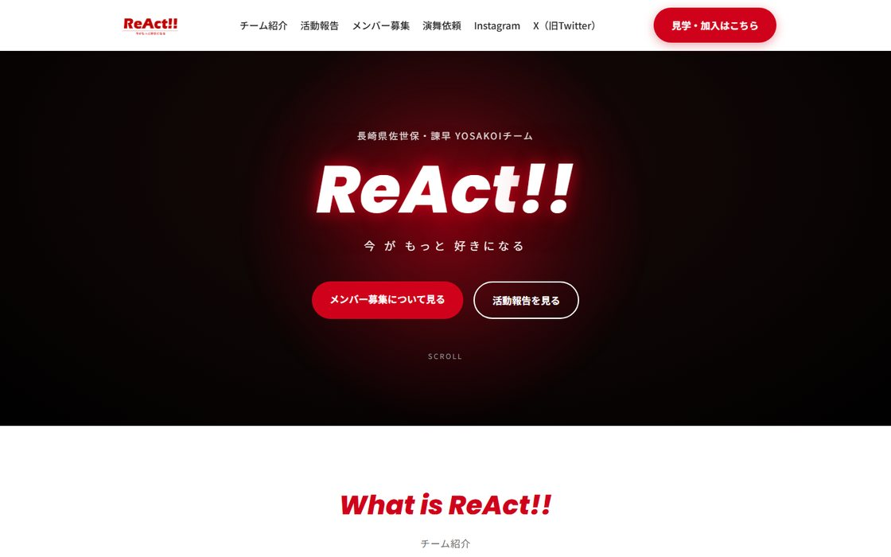

口で言うより、
動かして見てもらう。
並んでいるのは実際に公開しているページです。押すとこの枠の中で本物が動きます。

実績としてお見せできるのは ReAct!! 様の1件だけです。残りの2つは、 こういうものが作れますという見本として自分で作ったものです。
できること
-
01
2万円〜
ホームページ制作
数ページの静的サイトが中心です。スマートフォンでの見え方に合わせて作ります。 サーバーを使わない構成にできるので、月々の維持費がかからないことが多いです。
-
02
応相談
業務アプリ開発
タスク管理など、日々の業務で使う小規模なツール。 作る人ではなく、使う人がつまずく場所を考えて設計します。
-
03
応相談
Excelマクロ制作
集計・転記・レポート出力など、毎月くり返している作業を自動化します。 今のファイルをそのまま使える形にすることが多いです。
いくらで、どう進むか
先に金額の考え方をお伝えします。あとから増えることのないようにしたいので。
数ページの簡単なホームページの目安。内容が増えても8万円ほどまでが多いです。
着手金はいただきません。納品してご確認いただいてからの一括払いです。
納品時のご確認で気になる点は、2回まで無料で直します。
サーバーを使わない構成なら維持費はかかりません。独自ドメインは年間数千円。
- 1
ご相談
InstagramのDMから。「何から相談すればいいか分からない」段階で構いません。
- 2
ヒアリング
どんなお店で、誰に見てほしくて、何を載せたいか。ここに一番時間をかけます。
- 3
お見積り
作業内容・金額・納期をメールで。ご了承の返信をいただいてから着手します。
- 4
制作
本業の合間に進めるため、余裕をもった日程でご相談させてください。
- 5
ご確認・修正
できあがったものを見ていただき、気になる点を直します。
- 6
納品・お支払い
ご納得いただいてから、一括でお支払いをお願いします。

作るのは、この人間ひとりです
野﨑 大雅Gear Bloom 運営者
本業は企業の人事部門で、新卒採用と社内広報、それに自社ホームページの運営を担当しています。 その中で「作ってもらったはいいけれど、更新の仕方が分からず放置してしまう」ホームページを何度も見てきました。
同じことを、お付き合いするお店に経験してほしくない。それが始めた理由です。 まだ実績は多くありません。分からないことは分からないと伝えますし、実績の少なさも隠しません。 そのぶん、一件一件を確実にやります。
- 専門用語を使わずに説明することに慣れています
- 平日は夜間、土日は日中。即日対応・24時間対応はしていません
- お支払い完了後、データも著作権もお客様に帰属します
よくあるご質問
作ったあと、自分たちで更新できますか？
ご希望に応じて、ログインして記事を投稿・編集できる管理画面をお付けできます。 ReAct!! 様の事例では、スマホから写真つきで投稿できる画面をご用意しました。
毎月の維持費はかかりますか？
構成によります。ReAct!! 様の事例ではサーバーを使わない構成にしているため、維持費はかかっていません。 独自ドメインを取得される場合は年間数千円程度が別途かかります。
ネット予約や決済もお願いできますか？
複雑な予約システムや決済は、別の仕組みが必要になり月額のサーバー費用が発生します。 できないことはできないとお伝えしますので、まずはご相談ください。
対応できる時間帯を教えてください
本業がありますので、平日は夜間中心、土日は日中から終日で対応できる場合があります。 即日対応・24時間対応は行っていません。お急ぎの場合は、お受けできるかを正直にお伝えします。
写真がないのですが、大丈夫でしょうか
大丈夫です。お持ちの写真を使うほか、絵で描き起こすこともできます。 この画面のマークも、写真を使わずに作ったものです。
まず、話を聞くところから。
ホームページをお持ちでない方も、業務の困りごとだけでも構いません。 お断りいただいても、こちらから追いかけることはありません。